"...untuk berlabuh kepada hati mereka yang hidup dalam penderitaan." Berikut rangkuman perjalanan Tim Misi Kemanusiaan Yayasan Sungai Kasih sejak 2005 hingga hari ini.
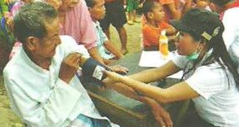
Bakti Sosial
2011 · 25 Maret · Pedongkelan
Baksos Pedongkelan
Pemberian pengobatan gratis untuk sekitar 300 masyarakat Pedongkelan yang ditangani Tim Medis.
Pemberian pengobatan gratis untuk sekitar 300 masyarakat Pedongkelan yang ditangani Tim Medis.
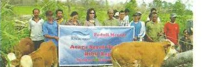
Usaha Sederhana
2011 · 8 Feb · Cangkringan, Sleman
Pembagian Bibit Sapi Jogjakarta
Pembagian bibit sapi kepada 26 kepala keluarga di Desa Umbul Harjo, Cangkringan, Sleman — agar masyarakat dapat kembali beternak pascabencana Merapi.
Pembagian bibit sapi kepada 26 kepala keluarga di Desa Umbul Harjo, Cangkringan, Sleman, Yogyakarta, yang diterima langsung oleh Kepala Dusun Karang Kendal, Bapak Marjo Wiyono. Pemberian bibit sapi ini ditujukan agar masyarakat dapat kembali beternak pascabencana Merapi.
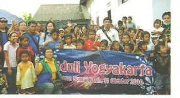
Tanggap Bencana
2010 · 31 Okt–9 Nov · Jogjakarta
Gunung Merapi, Jogjakarta
Bantuan paket sembako, pakaian, dan obat-obatan. Kunjungan kedua memberikan 1.000 nasi bungkus kepada pengungsi selama 3 hari.
Pemberian bantuan berupa paket sembako, pakaian, dan obat-obatan. Kunjungan kedua pada tanggal 7–9 November 2010, tim memberikan bantuan nasi bungkus kepada 1.000 orang di daerah pengungsian selama 3 hari dan memberikan pakaian dalam untuk mereka.
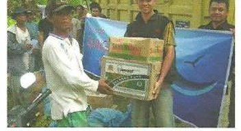
Tanggap Bencana
2010 · 4–9 Nov · Mentawai
Bencana Tsunami Mentawai
Bergabung dalam Posko Bersama lintas lembaga kemanusiaan, membawa bantuan logistik dan obat-obatan ke daerah yang sulit dijangkau.
Tim misi bergabung bersama beberapa lembaga kemanusiaan lain dalam Posko Bersama, masuk ke daerah-daerah yang sulit dijangkau untuk membawa bantuan logistik, obat-obatan, dan pengobatan gratis. Para korban tidur di tenda-tenda sederhana dengan kondisi yang sangat memprihatinkan.
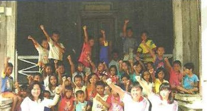
Bakti Sosial
2010 · 7–8 Agu · Tanjung Pandan, Belitung
Baksos Belitung
Dalam rangka HUT RI: pengobatan gratis untuk 150 orang, 100 paket sembako, dan pembagian sembako untuk 100 kepala keluarga di Tanjung Pandan.
Baksos yang terlaksana dalam rangka memperingati HUT RI. Selain pengobatan gratis kepada 150 orang, Yayasan Sungai Kasih juga memberikan 100 paket sembako untuk orang-orang tua yang membutuhkan. Pada hari kedua, tim melakukan pengobatan gratis dan pembagian sembako untuk 100 kepala keluarga di kota Tanjung Pandan.
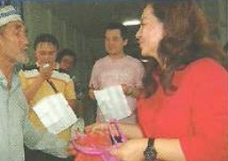
Bakti Sosial
2010 · 23–24 Apr · Sungai Raya, Pontianak
Misi Kemanusiaan Sungai Raya, Pontianak
Pemberian pengobatan gratis dan paket sembako untuk penduduk desa Sungai Raya.
Pemberian pengobatan gratis dan paket sembako untuk penduduk desa Sungai Raya.
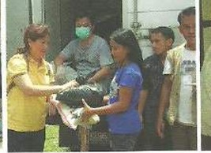
Tanggap Bencana
2009 · 4–23 Okt · Padang
Gempa Padang
Pemberian paket sembako, dapur umum, dan pengobatan gratis untuk para korban gempa.
Tim misi terjun untuk memberikan paket sembako, memenuhi kebutuhan dapur umum, dan pengobatan gratis untuk para korban gempa 4–8 Oktober 2009 dan 23 Oktober 2009.
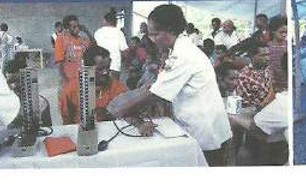
Kesehatan
2009 · 11 Jun · Papua
Pengobatan Papua
Pelayanan medis berupa pengobatan gratis kepada 720 pasien.
Kunjungan ke Papua untuk memberikan pelayanan medis berupa pengobatan gratis kepada 720 pasien di daerah tersebut.
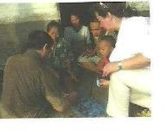
Kesehatan
2009 · 8–15 Mar · Batu Ampar, Kalbar
Misi Kemanusiaan Batu Ampar, Kalbar
Kunjungan ke rumah-rumah penduduk dan pengobatan gratis untuk TBC, diare, dan penyakit kulit yang tidak terobati bertahun-tahun.
Kunjungan ke rumah-rumah penduduk dan memberikan pelayanan medis berupa pengobatan gratis. Sebagian besar penyakit yang diderita penduduk adalah TBC, diare, dan penyakit kulit yang tidak terobati selama bertahun-tahun.
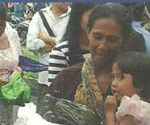
Bakti Sosial
2009 · 7–9 Mar · Cilacap
Misi Kemanusiaan Cilacap
Pembangunan 6 WC dan pemberian sembako untuk 350 kepala keluarga.
Pembangunan 6 WC dan pemberian sembako untuk 350 kepala keluarga di Cilacap.
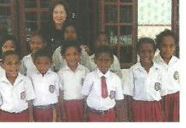
Bakti Sosial
2008 · 5–10 Des · Manokwari, Papua
Misi Kemanusiaan Manokwari, Papua
Kunjungan rumah penduduk dan bantuan pembangunan 11 rumah ibadah yang rusak akibat gempa 6,2 SR.
Menjelang Natal, tim misi melakukan pelayanan ke Manokwari. Tim mengunjungi beberapa rumah penduduk dan juga membantu pembangunan 11 rumah ibadah yang rusak akibat gempa berkekuatan 6,2 skala Richter yang menimpa Manokwari pada 7 Januari 2008.
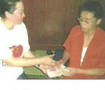
Tanggap Bencana
2008 · Mei · Sichuan, China
Gempa Sichuan, China
Mengunjungi korban gempa untuk dukungan rohani dan dana tunai, langsung ke tenda-tenda pengungsian.
Mengunjungi korban gempa untuk memberikan dukungan rohani dan juga dana berupa uang tunai, dan mengunjungi secara langsung orang-orang yang berada di tenda-tenda pengungsian.
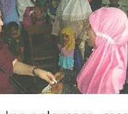
Kesehatan
2008 · 31 Mar–3 Apr · Kupang & Rote, NTT
Misi Kemanusiaan Kupang & Rote (NTT)
Pengobatan gratis dan pelayanan anak-anak gizi buruk, termasuk pemberian 1.100 paket susu.
Tim misi kembali melakukan pelayanan masyarakat ke Nusa Tenggara Timur. Pelayanan dilakukan di Kupang & Rote dengan pemberian pengobatan gratis kepada masyarakat yang membutuhkan. Tim medis kami juga melayani anak-anak dengan gizi buruk dan memberikan 1.100 paket susu.
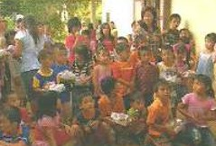
Bakti Sosial
2008 · Mar & Mei · Singkawang
Misi Kemanusiaan Singkawang
180 kepala keluarga menerima paket sembako dan pengobatan gratis; panggung boneka untuk sekitar 280 anak.
Sebanyak 180 kepala keluarga mendapatkan paket sembako dan pengobatan gratis. Tim juga mengadakan panggung boneka khusus untuk anak-anak yang dihadiri kurang lebih 280 orang anak.
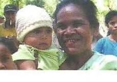
Bakti Sosial
2007 · 20–25 Sep · Kupang & Soe
Misi Kemanusiaan Kupang & Soe
Kunjungan rumah sakit dan rumah penduduk, membawa Tim Medis untuk pengobatan gratis.
Pelayanan terhadap masyarakat Kupang & Soe yang berkekurangan. Bantuan dan hiburan diberikan dalam bentuk sembako, kunjungan ke rumah sakit dan juga ke rumah-rumah penduduk. Kami juga membawa Tim Medis untuk memberikan pengobatan gratis.
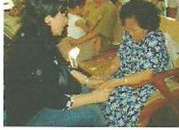
Tanggap Bencana
2006 · Apr–Agu · Jogjakarta
Gempa Jogjakarta
Gempa 5,9 SR — bantuan obat-obatan, makanan, pakaian, selimut, tenda; gelombang kedua berupa material pembangunan 7 rumah ibadah di Gunung Kidul.
Gempa berkekuatan 5,9 skala Richter mengguncang Jogjakarta. Tim misi memberikan bantuan berupa obat-obatan, makanan, pakaian, selimut, tenda kepada korban di daerah Gunung Kidul dan Bantul (daerah yang paling parah terkena gempa). Selanjutnya, bantuan gelombang kedua diberikan pada tanggal 7–17 Agustus 2006, yaitu berupa bahan material untuk pembangunan 7 rumah ibadah di daerah Gunung Kidul.
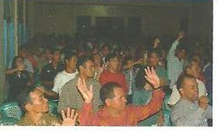
Rohani
2006 · 1–8 Jul · Sintang, Kalbar
Misi Kemanusiaan Sintang, Kalbar
Pembinaan Iman yang dihadiri oleh 800 anak muda.
Dalam pelayanan di Sintang, tim misi mengadakan Pembinaan Iman yang dihadiri oleh 800 anak muda.
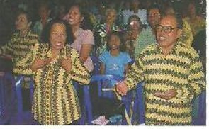
Bakti Sosial
2005 · 23–25 Sep · Karang Anyar, Solo
Misi Kemanusiaan Solo
Kunjungan ke rumah-rumah penduduk desa Karang Anyar, Solo, Jawa Tengah yang hidup dalam keadaan susah.
Pada tanggal 23–25 September 2005, tim misi melakukan perjalanan misi kemanusiaan ke desa Karang Anyar, Solo – Jawa Tengah. Dalam pelayanan ini kami melakukan kunjungan ke rumah-rumah penduduk yang hidup dalam keadaan susah.
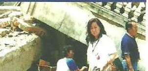
Awal Mula
2005 · 29 Maret · Gunung Sitoli, Nias
Gempa Nias
Titik awal seluruh pelayanan Yayasan Sungai Kasih. Gempa 8,2–8,7 SR mengguncang Nias — bantuan rohani, logistik, uang tunai, dan 2 unit sepeda motor bagi masyarakat Gunung Sitoli.
Nias merupakan daerah pertama yang kami kunjungi dalam pelayanan tanggap bencana, ketika daerah tersebut diguncang gempa berskala 8,2–8,7 skala Richter pada 29 Maret 2005 pukul 23.11 WIB. Dalam perjalanan pelayanan tanggap bencana ini, kami memberikan pelayanan rohani dengan menghibur dan mendoakan korban bencana, memberikan bantuan logistik dan uang tunai, serta membeli 2 (dua) buah unit sepeda motor untuk masyarakat di Gunung Sitoli. Perjalanan pelayanan tanggap bencana perdana ini merupakan titik awal pelayanan selanjutnya.